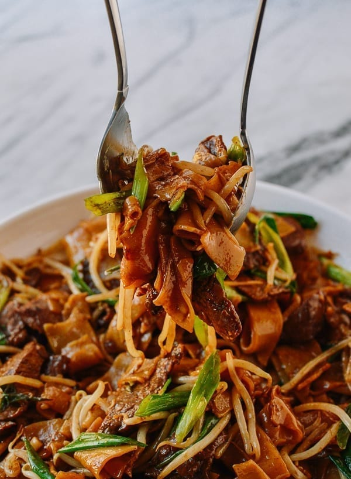

Beef Chow Fun

Description
Beef chow fun is a favorite Cantonese dish (popular at dim sum), made from
stir-frying beef, wide rice noodles, scallions, ginger, bean sprouts and
dark soy.
Ingredients
For The Beef & Marinade:
- 8 oz. flank steak (225g, sliced into 1/8 thick pieces)
- 1/4 teaspoon baking soda (optional)
- 1 teaspoon cornstarch
- 1 teaspoon soy sauce
- 1 teaspoon vegetable oil
For The Rest Of The Dish:
- 12 oz. fresh wide rice noodles
- 3 tablespoons vegetable oil
- 4 scallions (split in half vertically and cut into 3-inch pieces)
- 3 thin slices ginger
- 2 tablespoons Shaoxing wine
- 1/2 teaspoon sesame oil
- 2 teaspoons dark soy sauce
- 2 tablespoons regular soy sauce
- 1/8 teaspoon sugar
- salt and white pepper (to taste)
- 4 to 6 ounces fresh mung bean sprouts
Steps
-
Combine the beef and marinade ingredients and marinate for about 1 hour.
-
Some fresh rice noodles come as large sheets, while others are already
cut. If you have the sheets, slice the rice noodles so they're about 1
inch wide. If the noodles are very stiff and stuck together, bring a wok
full of water to a boil, and add the noodles. Blanch them for 30 seconds
to loosen. Transfer to an ice bath and drain thoroughly.
-
Heat your wok over high heat until smoking, and add 1 1/2 tablespoons
oil to coat the wok. Add the beef and sear until browned. As long as
your wok is hot enough, the meat shouldn't stick. Set aside. Add 1 1/2
tablespoons more vegetable oil to the wok. Add the ginger to infuse the
oil with its rich flavor for about 15 seconds. Add the scallions.
-
Spread the noodles evenly in the wok and stir-fry on high for about 15
seconds. Add the Shaoxing wine around the perimeter of the wok.
-
Next, add the sesame oil, soy sauces, pinch of sugar and the seared
beef. Stir-fry, making sure your metal wok spatula scrapes the bottom of
the wok. Lift the noodles in an upward motion to mix well and coat them
evenly with the sauce.
-
Add a bit of salt and white pepper to taste (taste the noodles before
adding salt). Add the bean sprouts and stir-fry until they are just
tender. Serve!